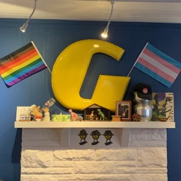

About Us
Founded as a family business in 2006, we believe that genuine connection is the foundation of communities. Austin has changed rapidly in our years of operation, but one thing has not: we remain a diverse community of neighbors all under the same rainbow. It is our mission to create a space that serves all people in our community. For us, that means stay kind and stay genuine.
We proudly partner with local and regional vendors such as Barrett’s Microroasters, Kiva Coffee Roasters, Russell’s Bakery, Happy Vegan Bakers, and Kosmic Kombucha to serve the best of Austin to our neighborhood. We also offer two community rental spaces for reservation. Contact us by phone for any inquiries.
Whether you’re here to meet old friends or here to make new ones, to write your new novel or enjoy to one of the classics, come on in and grab a cup of joe. Welcome home.